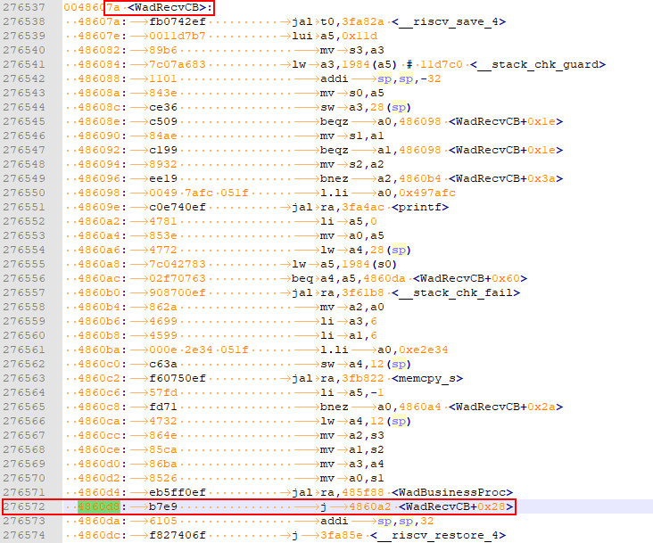

The Second Example Program of the Hi3861 Development Board¶
This example shows how to compile a simple service and export Hello World.
The source code is modified.¶
The source code needs to be modified in the bugfix and new service scenarios. The following uses a new service as an example to describe how to modify the source code.
Determine the directory structure.
Before compiling a service, you must create a directory (or a directory structure) in ./application/sample/wifi-iot/app to store service source code files.
For example, add the my_first_app service to the app directory, where hello_world.c is the service code and BUILD.gn is the compilation script. The directory structure is as follows:
. └── application └── sample └── wifi-iot └── app │── my_first_app │ │── hello_world.c │ └── BUILD.gn └── BUILD.gnCompiling Service Code
Create the service entry function HelloWorld in hello_world.c and implement the service logic. At the bottom of the code, use the SYS_RUN() interface to start services. (SYS_RUN is defined in the ohos_init.h file.)
#include "ohos_init.h" #include "ohos_types.h" void HelloWorld(void) { printf("[DEMO] Hello world.\n"); } SYS_RUN(HelloWorld);
Compile the BUILD.gn file for building services into a static library.
As described in step 1, the BUILD.gn file consists of three parts (target, source file, and header file path), which need to be filled in by developers. Take my_first_app as an example. You need to create ./application/sample/app/my_first_app/BUILD.gn and complete the following configurations.
static_library("myapp") { sources = [ "hello_world.c" ] include_dirs = [ "//utils/native/lite/include" ] }
The compilation result of the service module specified in static_library is the static library file libmyapp.a. Set this parameter based on the site requirements.
In source, specify the .c file and path on which the static library .a depends. If the path contains “//”, it indicates an absolute path (the code root path). If the path does not contain “//”, it indicates a relative path.
In include_dirs, specify the path of the .h file on which the source depends.
Compile the BUILD.gn file and specify the feature modules to be built.
Configure the ./application/sample/app/BUILD.gn file and add an index to the features field to enable the target module to participate in compilation. The features field specifies the path and target of a service module. The following uses my_first_app as an example. The features field is configured as follows:
lite_component("app") { version = "1.0.0" dependences = [] features = [ "my_first_app:myapp" ] }
my_first_app is a relative path that points to ./application/sample/app/my_first_app/BUILD.gn.
myapp is the target that points to static_library(“myapp”) in ./application/sample/app/my_first_app/BUILD.gn.
Commissioning¶
Currently, there are three debugging and verification methods: using printf to print logs, using asm files to locate panic problems, and using jLink simulator for debugging. Developers can select a method based on the actual service situation.
In this example, the service is simple. Therefore, you can use the printf method to print logs. The following describes how to use various debugging methods.
h2printf print¶
The printf maintenance and test function is added to the code. The information is directly printed to the serial port. Developers can add logs in key service paths or service exception locations, as shown in the following figure.
void HelloWorld(void)
{
printf("[DEMO] Hello world.\n");
}
h2. Locate the fault based on the asm file.¶
When the system exits abnormally, the call stack information about the abnormal exit cause is displayed on the serial port, as shown in the following figure. You can locate the exception by parsing the exception stack information.
=======KERNEL PANIC=======
**********************Call Stack*********************
Call Stack 0 -- 4860d8 addr:f784c
Call Stack 1 -- 47b2b2 addr:f788c
Call Stack 2 -- 3e562c addr:f789c
Call Stack 3 -- 4101de addr:f78ac
Call Stack 4 -- 3e5f32 addr:f78cc
Call Stack 5 -- 3f78c0 addr:f78ec
Call Stack 6 -- 3f5e24 addr:f78fc
********************Call Stack end*******************
To parse the preceding call stack information, the Hi3861_wifiiot_app.asm file is required. This file records the symbol addresses of the functions in the code in the flash memory and the disassembly information. The ASM file is built and output together with the version software package and is stored in the ./out/wifiiot_hi3861v100_liteos_riscv/ directory.
Save the CallStack information to a .txt file for editing. Pause or resume barcode scanning.
Open the asm file, search for the addresses in CallStack, and list the corresponding function names. Generally, you only need to find the functions corresponding to the first several stack information to determine the direction of the abnormal code.
Call Stack 0 -- 4860d8 addr:f784c -- WadRecvCB Call Stack 1 -- 47b2b2 addr:f788c -- wal_sdp_process_rx_data Call Stack 2 -- 3e562c addr:f789c Call Stack 3 -- 4101de addr:f78ac Call Stack 4 -- 3e5f32 addr:f78cc Call Stack 5 -- 3f78c0 addr:f78ec Call Stack 6 -- 3f5e24 addr:f78fc
Based on the preceding call stack information, it can be determined that an exception occurs in the WadRecvCB function.

Check and modify the code.
Verification¶
After the sample code is compiled, burnt, run, and debugged, the following information is displayed:
ready to OS start
FileSystem mount ok.
wifi init success!
[DEMO] Hello world.
Follow-up Learning¶
Congratulations! You have finished the Hi3861 WLAN module quick start. You can go on learning Cameras with a Screen in the next step.